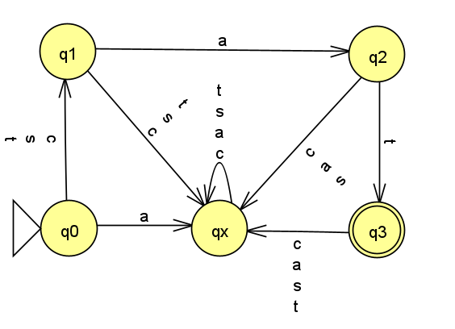

Homework 1
Last updated: Tue, 15 Sep 2026 10:23:23 -0400
Out: Tue Sept 15, 12:30pm EDT Due: Tue Sept 22, 12:30pm EDT
Note: Assignments are not officially "released" until—
and are subject to change without notice up to— the indicated "Out" date and time. Students who look ahead are responsible for ensuring that they are always working with the most recent version of the homework.
This assignment begins to explore deterministic finite automata (DFAs) and regular languages.
Homework Problems
HW 0 Second Chance! (up to 5 points extra)
Proof Practice (12 pts)
DFA Formal Description (12 points)
README (1 point)
Maximum: 30 (out of 25) points
Submitting
Submit your solution to this assignment in Gradescope hw1. Please assign each page to the correct problem and make sure your solutions are legible.
A submission must also include a README containing the required information.
HW 0 Second Chance!
what your misunderstanding was, and
what the right answer should be.
You will receive 1 bonus pt on this assignment for each HW 0 question where you provide the above information.
Alternatively, if you got less than five questions wrong, you may come up with a possible discrete math quiz question that you think would help future students prepare for this course.
You will receive 1 bonus pt on this assignment for each quiz question you come up with.
The maximum bonus that may be earned on this assignment is 5 points.
1 Proof Practice
CourseRule1: overall = (midterm + final) / 2
CourseRule2: \operatorname{IF} overall > 90 \operatorname{THEN} grade = \texttt{A}
Prove the following statement: \operatorname{IF} midterm = 87 \operatorname{AND} final = 95 \operatorname{THEN} grade = \texttt{A}
You may only use the facts, proof rules, and allowed logical inference steps described in this course from this semester. Any other answers won’t receive any credit.
Make sure to follow all required syntax and proof formatting as well.
Do not skip over or combine any steps (but answers should not be more than 10 "lines" of proof).
2 DFA Formal Description
The first computational model we are studying is a class of machines called finite state automata (FSMs), or more specifically deterministic finite automata (DFAs). Intuitively, you can think of this as a "programming language" for expressing basic string matching computation (i.e., "programs").
Following this analogy, a single DFA then would be a "program" that does a single string matching computation task. We learned in lecture that this "program" can have many representations, including a graphical one, i.e., a state diagram.
In this problem, you will work with various representations, and also reason about how it "runs".
starts in the start state,
from the start state, follow the transition arrow labeled with the first character in the input string to go to the next state,
repeat for each other character in the input string,
if the last state is an accept state, then the result of the computation is (to) accept (the input string), otherwise the result of the computation is reject
Concretely, imagine you have been given the following FSM (DFA) that matches on certain strings.
(In the state diagram, transitions with multiple character labels are a graphical abbreviation representing multiple transitions, one for each one of the characters.)

Come up with 2 strings that are accepted by the DFA. These strings are said to be "in the language" recognized by the DFA. For each of these strings, give the sequence of states that the machine goes through before accepting the string.
Come up with 3 strings that are not accepted (rejected) by the DFA. These strings are "not in the language" recognized by the DFA. For each of these strings, give the sequence of states that the machine goes through.
In this course, a language is a set of strings. Further, the set of all strings accepted by a machine is called the language of the machine, or the language recognized by the machine. In fact, in this course, we will come to view machines as merely an alternate representation of a language, i.e., they are the same thing!.
If the given DFA is named C, then what is the language of C, often denoted, \operatorname{LangOf}(C). (Remember that a language is set so any answer that is not a set cannot be correct.)
Come up with a formal description of this DFA. Remember that the DFA is named C.
Recall that to construct a DFA’s formal description, one must use the appropriate constructor with the appropriate (tuple) input.
You may assume that the alphabet contains only the symbols from the diagram.